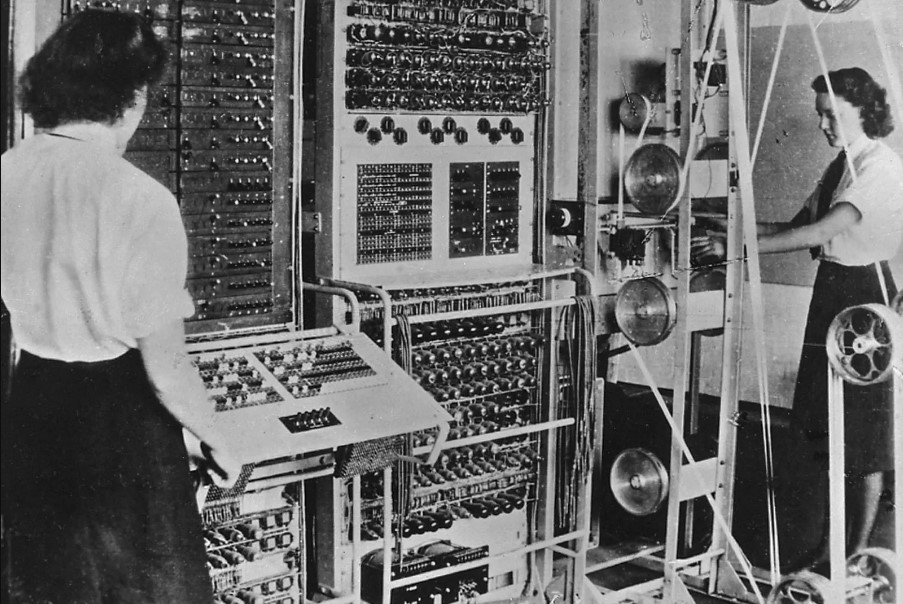
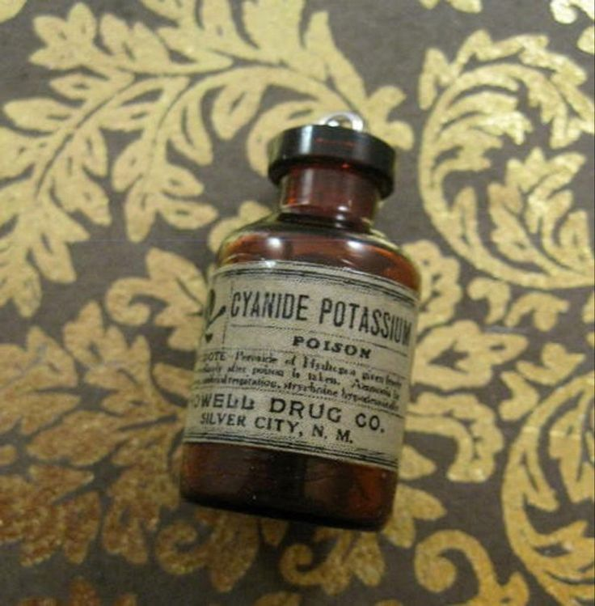

| Year |
Event |
Image |
| 1912 |
Born in London, England |
_in_1936_at_Princeton_University.jpg) |
| 1931 |
Begins studying mathematics at King's College, Cambridge |
|
| 1936 |
Publishes paper "On Computable Numbers, with an Application to the Entscheidungsproblem" |
|
| 1939-1945 |
Works for British government as codebreaker during World War II |
 |
| 1950 |
Publishes paper "Computing Machinery and Intelligence," which proposes the Turing test |
|
| 1952 |
Convicted of homosexuality, which was then a crime in the UK |
|
| 1954 |
Dies of cyanide poisoning. His death is ruled a suicide |
 |
| 2009 |
British Prime Minister Gordon Brown issues an official apology for the way Turing was treated by the government |
|